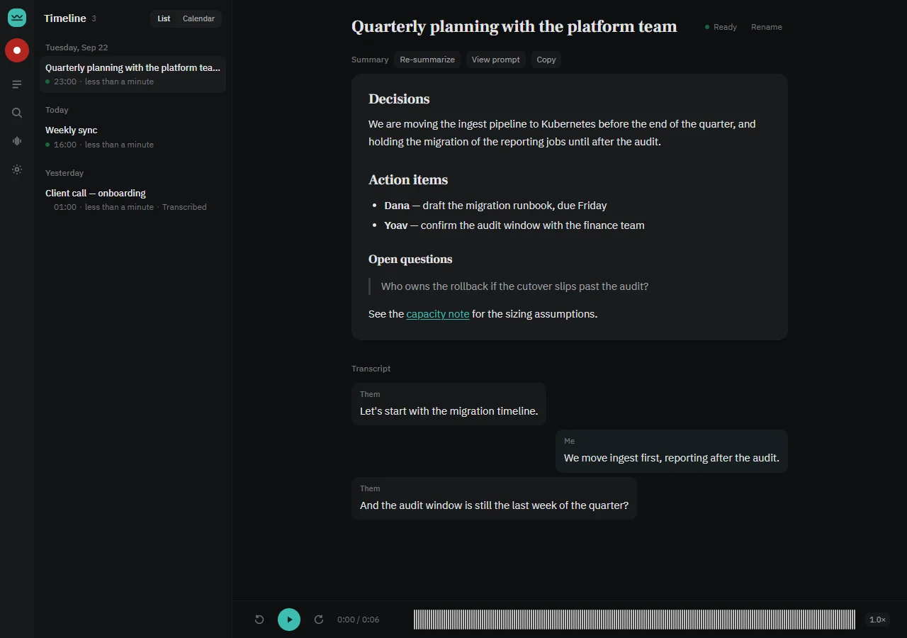

Your meeting audio stays home
The meeting is recorded on your own computer, and the audio never leaves it. No bot joins the meeting, and nothing is sent to a recording service.
Meeting notes for Windows
Connect Google Calendar and Upshot knows your meetings: when each one starts, what it’s called and who’s invited. It records and transcribes on your own PC, with no bot in the meeting, and summaries come from the AI you already pay for.
The recording stops here
See it
Pressing play loads the video from YouTube (Google), which may store cookies on your device. Privacy Policy
The meeting is recorded on your own computer, and the audio never leaves it. No bot joins the meeting, and nothing is sent to a recording service.
Speech becomes text on your PC, with Whisper models on your processor or NVIDIA graphics card. No audio goes to a transcription service.
Use an API key from Anthropic, OpenAI or Google, a model on your PC, or the AI command-line tool you are already signed into. Only text goes to it, such as the transcript and your instructions, never the audio.
Ask Claude, Codex or another AI app on your PC to transcribe an audio or video file. Upshot does it on your computer through its MCP server and sends your AI app only the text. Upshot never uploads the file.
Upshot recognizes the meeting's language by itself. Whisper covers about a hundred languages and is most accurate in the widely spoken ones, and a meeting in Hebrew gets a model trained for Hebrew.
The code is on GitHub. Install it for free for personal use, or in an organization of fewer than 20 people, under the Upshot license. Larger organizations, and anyone offering it in a competing product or service, need a commercial license.
Setup
First-run setup offers to connect your Google Calendar. It is optional and read-only: Upshot can’t create, change or delete anything in it.
Sign in with your Google Account and allow read-only access to your events
It knows when each meeting is scheduled, so it is ready to record
Each recording of a calendar meeting takes its title, time and the people invited
Every recording of a calendar meeting carries its title and time, so your timeline reads like your week.
The people invited appear with the meeting in your timeline.
The invitation details (title, times, organizer, the names of the people invited, whether they are optional and whether they declined, the description, the location, and the names and links of attached files) go with the meeting’s text to the AI you chose, so the summary knows what the meeting was for. Email addresses are never sent. You can turn this off, and with a model on your PC nothing is sent.
Calendar data goes from Google straight to your PC, never to us. Of your calendar data, only invitation details leave your PC: those above to the AI you chose and, when you ask it to, your meetings’ details and your calendar’s events to an AI app you connected yourself. You can disconnect at any time. Privacy Policy
Your data
The recording never leaves your computer: Upshot turns it into text there. What you choose is who writes the summary from that text — and whether anything leaves at all.
Nothing leaves
The words onlyDefault
Either way, no audio is ever sent anywhere.
For your AI app
Connect Claude Desktop, Claude Code, Codex, Cursor or another app that speaks MCP. Ask it to transcribe a recording, and Upshot does the work on your PC. Upshot gives your AI app the text, never the audio. From there the text goes to your AI app’s provider, as anything in a chat does.
What you ask your AI app
Transcribe interview.mp4 from my Downloads folder, then list the three main points.
[00:00] S1: Thanks for coming in. Let’s start with the pilot.
[00:04] S2: We can start on the 1st, with two teams.
[00:09] S1: And reporting moves to phase two.
The problem with notetaker bots
Client: Sorry, who’s the notetaker?
Upshot never joins the meeting. It listens from your own PC, and keeps what it hears there.
How it works
From your Google Calendar, or by noticing that a meeting started, in any app
Quietly, on your computer. Nobody in the meeting sees a thing
After the meeting, a summary in your format is in your timeline
Let it record every meeting it notices, or just have it show you the meetings it spotted. You can always press Record yourself.
Your words are kept apart from everyone else’s, so it’s always clear what you said you’d do.
No special hardware. A graphics card makes it faster; without one, your notes just take longer to arrive.
Automatic recording
When a meeting app takes the microphone, Upshot checks which app it is, the window title, whether the camera is on, and whether both sides are talking. Enough signs together mean a meeting.
Out of the box it only lists the meetings it spotted, so you can see it gets them right. Switch on auto-record once you trust it, and stop pressing Record.
Missing a meeting costs you one click; recording something that wasn’t one costs your trust. Every recording says what made it start, so you can always answer “why did it record that?”
Your format
What you tell it, once
Write the summary as an email to the client. Open with a two-line recap, then Decisions, Action items with owner and date, and Next meeting. Headings in #0f766e. Under 200 words.
Thanks for the time today. We agreed the pilot starts on the 1st, with the reporting module in phase two.
Tuesday 10:00, pilot kickoff
Change your instructions any time, and any meeting can be written up again in the new format.
Works with your meeting app
Run on real meetings
Upshot works with any meeting app on your computer, without joining the meeting or adding anything to it. Summaries are written by the AI model you choose: Claude has written them for real meetings, and the others are ready but not yet used on a live one.
The app

Compared
| Question | Notetaker bots | Upshot |
|---|---|---|
| What leaves your computer | the whole recording | the text, or nothing at all |
| Shows up in the participant list | yes | never |
| Recording stored on a vendor’s servers | usually | never |
| Summary in a format you write yourself | templates | any format |
| An account to sign up for | yes | no |
| Built to understand Hebrew | rarely | yes |
Trust
Questions
Upshot tells the other people in the meeting apart, and you can name each one.